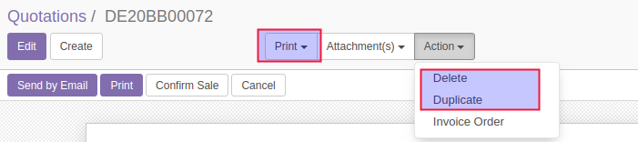
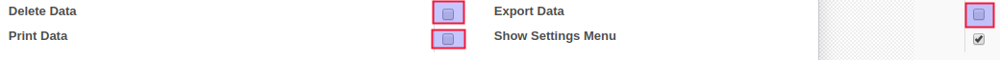
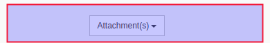

Prevent export, delete and print
Allows admin to restrict export, delete and print button for a specific user
Features
- Prevent export data by user
- Prevent delete data by user
- Prevent print data by user
Assuming you want to hide one of these buttons or all

Go on user's configurations and assign him a role

The buttons are hidden

This module is based on OCA's works and other contributors. You can find the
original module in this repository: https://github.com/OCA/web/tree/11.0
Thanks to Onestein, Tecnativa & Odoo Community Association (OCA)